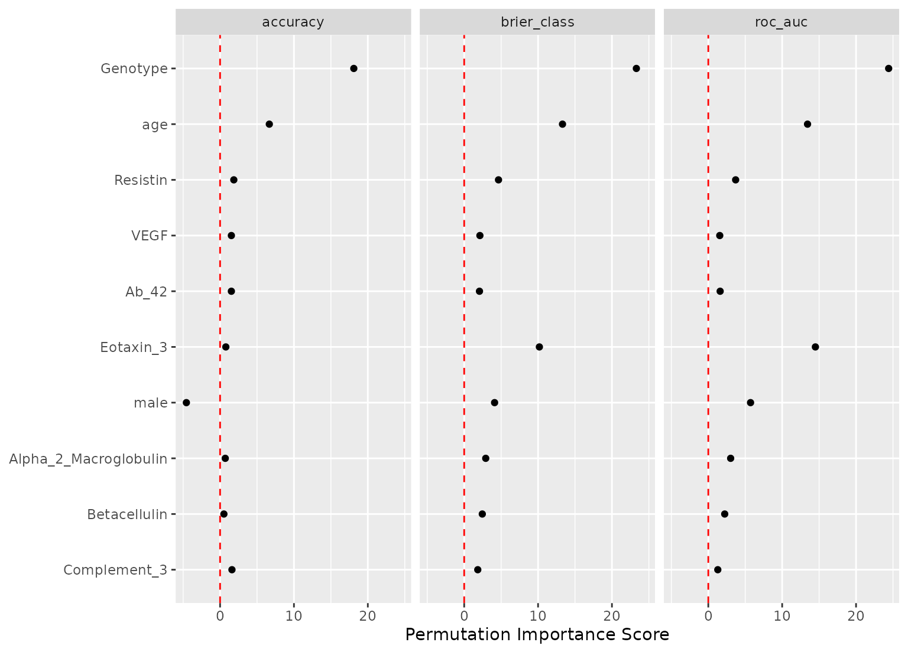
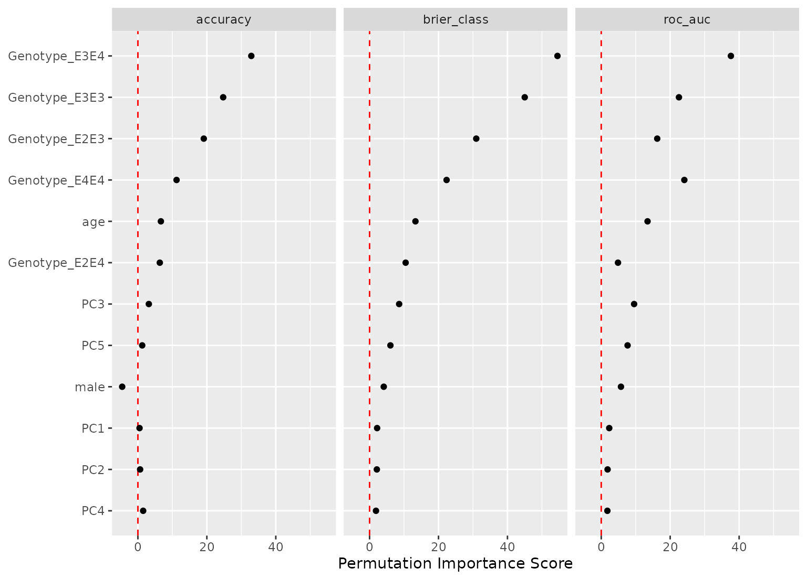
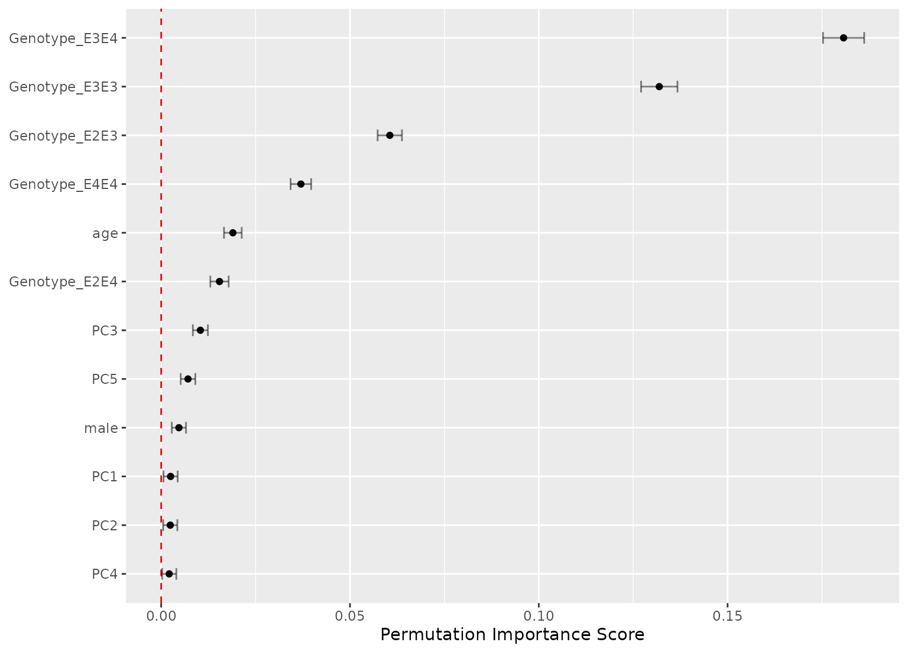

Visualize importance scores
Arguments
- object
A tibble of results from
importance_perm().- top
An integer for how many terms to show. To define importance when there are multiple metrics, the rankings of predictors are computed across metrics and the average rank is used. In the case of tied rankings, all the ties are included.
- metric
A character vector or
NULLfor which metric to plot. By default, all metrics will be shown via facets. Possible options are the entries in.metriccolumn of the object.- eval_time
For censored regression models, a vector of time points at which the survival probability is estimated.
- type
A character value. The default is
"importance"which shows the overall signal-to-noise ration (i.e., mean divided by standard error). Alternatively,"difference"shows the mean difference value with standard error bounds.- std_errs
The number of standard errors to plot (when
type = "difference").- ...
Not used.
Examples
# Pre-computed results. See code at
system.file("make_imp_example.R", package = "important")
#> [1] "/home/runner/work/_temp/Library/important/make_imp_example.R"
# Load the results
load(system.file("imp_examples.RData", package = "important"))
# A classification model with two classes and highly correlated predictors.
# To preprocess them, PCA feature extraction is used.
#
# Let’s first view the importance in terms of the original predictor set
# using 50 permutations:
imp_orig
#> # A tibble: 390 × 6
#> .metric predictor n mean std_err importance
#> <chr> <chr> <int> <dbl> <dbl> <dbl>
#> 1 roc_auc Genotype 50 0.108 0.00442 24.4
#> 2 brier_class Genotype 50 0.0353 0.00151 23.3
#> 3 accuracy Genotype 50 0.0568 0.00314 18.1
#> 4 roc_auc Eotaxin_3 50 0.0568 0.00392 14.5
#> 5 roc_auc age 50 0.0622 0.00463 13.4
#> 6 brier_class age 50 0.0190 0.00143 13.3
#> 7 brier_class Eotaxin_3 50 0.0132 0.00130 10.2
#> 8 accuracy age 50 0.0183 0.00275 6.67
#> 9 roc_auc male 50 0.0201 0.00352 5.72
#> 10 brier_class Resistin 50 0.00535 0.00115 4.65
#> # ℹ 380 more rows
autoplot(imp_orig, top = 10)

# Now assess the importance in terms of the PCA components
imp_derv
#> # A tibble: 36 × 6
#> .metric predictor n mean std_err importance
#> <chr> <chr> <int> <dbl> <dbl> <dbl>
#> 1 brier_class Genotype_E3E4 50 0.181 0.00332 54.5
#> 2 brier_class Genotype_E3E3 50 0.132 0.00293 45.0
#> 3 roc_auc Genotype_E3E4 50 0.238 0.00632 37.6
#> 4 accuracy Genotype_E3E4 50 0.140 0.00427 32.9
#> 5 brier_class Genotype_E2E3 50 0.0605 0.00196 30.9
#> 6 accuracy Genotype_E3E3 50 0.0902 0.00364 24.7
#> 7 roc_auc Genotype_E4E4 50 0.0841 0.00349 24.1
#> 8 roc_auc Genotype_E3E3 50 0.106 0.00472 22.5
#> 9 brier_class Genotype_E4E4 50 0.0370 0.00166 22.3
#> 10 accuracy Genotype_E2E3 50 0.0497 0.00260 19.1
#> # ℹ 26 more rows
autoplot(imp_derv)

autoplot(imp_derv, metric = "brier_class", type = "difference")
